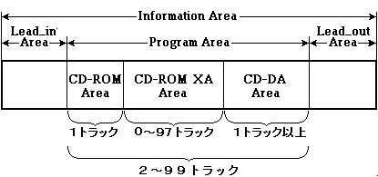
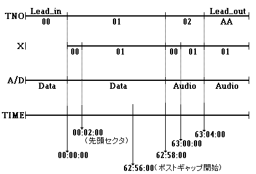
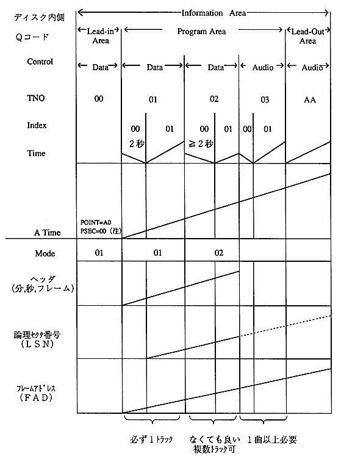
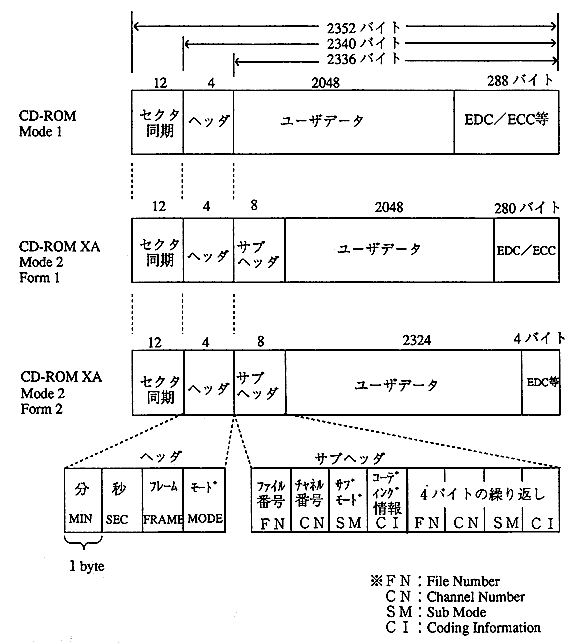
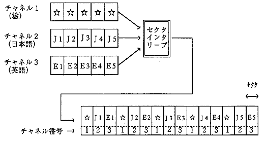

★PROGRAMMER'S GUIDE
★DISCフォーマット規格仕様書
★PROGRAMMER'S GUIDE
★DISCフォーマット規格仕様書
図2.1 ディスク内の各エリアの配置

 |
CD-ROMエリア(Mode 1)は１トラックだけ必要です。 CD-DAエリアは、少なくとも１トラック以上必要です。 |
|
１トラックは、ポーズ領域やプリギャップ、ポストギャップ領域を除いて必ず４秒以上必要です。 |
ABS TIME | LSN | FAD | |
先頭フレーム | 00:00:00 | − | 0 |
先頭セクタ | 00:02:00 | 0 | 150 |
最終セクタ | 63:01:74 | 283499 | 283649 |
最終フレーム | 63:03:74 | − | 283799 |
リードアウトエリア開始時間 | 63:04:00 |
図2.2 データトラックを最大にした時のトラックイメージ図
(オーディオトラックを最小にした時)

図2.3 一般的なGAME-CDの構造

図2.4 CD-ROMおよびCD-ROM XAセクタフォーマット

|
フォーム指定のないMode2フォーマットは使用できません。 |
バイト添字 | 値 |
|---|---|
12 | 分 |
ファイル番号 | 説 明 |
|---|---|
0 |
以下のファイルまたは領域に使用されます |
1〜255 |
インタリーブされている場合も、連続的な場合も有り得ます |
図2.5 チャネル番号によるセクタインタリーブ

ビット番号 | ビット名称 | 省略値 |
|---|---|---|
7 |
End Of File(EOF) |
0 |
★PROGRAMMER'S GUIDE
★DISCフォーマット規格仕様書